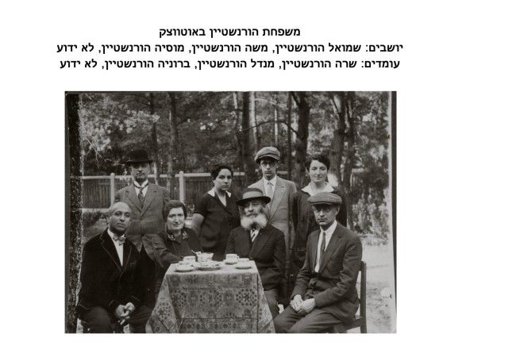

Saving the Horenstein Girl
The Story of Miriam Horenstein: “It was a very hard job to take away the child from Mr. Kumala, because the latter … gave us a false address, trying to hide the child in order to prevent the possibility of her going away from him … It was clear that Mr. Kumala intended to abuse the whole matter for the purpose of a real blackmail executed as well on us, as on the child’s family abroad … The child is in good health and very satisfied of the change of her situation” * Saving a Life

This Shabbos, Parshas Teruma, the 6th of Adar, is the Yohrtzeit of Rabbi Shmaryahu Gurary (Rashag), the son-in-law of the Frierdiker Rebbe. In honor of his Yohrtzeit we present a special chapter in his postwar work, in rescuing a young Jewish girl, a descendant of the Rebbe Maharash, from the Non-Jewish family which adopted her during the war.
This girl, named Miriam Horenstein, was the daughter of R’ Shmuel Horenstein, who was murdered by the Nazis in the Warsaw Ghetto in 1943.
R’ Menachem Mendel Horenstein, a brother of R’ Shmuel Horenstein, was the youngest son-in-law of the Frierdiker Rebbe, he married Rebbetzin Shaina. The couple adopted their nephew, Yekusiel Yaakov Yosef Liss. All three were murdered in Treblinka in 1942.
These fascinating documents are part of the JDC Archives (which were digitized and uploaded online, thanks to a grant from Dr. Georgette Bennett and Dr. Leonard Polonsky CBE).
Who Survived?
The first communication we have is a letter from Mr. D. Guzik (JDC Warsaw) to the Rashag, in which he responds to an inquiry regarding the fate of R’ Menachem Mendel Horenstein, his wife Rebbetzin Shaina Horenstein and their adopted child, Yekusiel Yaakov Yosef Liss. This letter was sent on September 25, 1945 [18 Tishrei 5706]:
Dear Sir:
Referring to your cable of 9/11 we advise you, that Mendel and Schejna Horensztein are dead. Their child has managed to survive and lives in Poland. – Its address is known to us.
Seems like some mistake occurred, and the next letter on this matter clarified that the referenced child is the child of R’ Shmuel Horenstein; this letter was sent by Ms. Jeanette Robbins from the Personal Inquiry Department of the JDC in New York, to Mr. Guzik (JDC – Warsaw) on October 2, 1945 [25 Tishrei 5706]:
Rabbi S. Gourary, 770 Eastern Parkway, Brooklyn, New York, has been in touch with us in regard to Marya Horensztein, the daughter of Shmul Horensztein. A letter was received from Josef Kumala stating that the child is with him. Rabbi Gourary would like to have Marya go to Palestine in order to live with an aunt there. He is endeavoring to secure a Palestine certificate for her and has promised to let us know when the issuance of the certificate is authorized so that we can inform you.
In the meantime, we will appreciate your doing anything you can to help the child. Rabbi Gourary wishes to look after the expenses of her maintenance and we have suggested that he send funds to her addressing the money to her in your care.
Not Letting Her Go Back
A few weeks later, on October 29, 1945 [22 Cheshvan 5706], Mr. D. Guzik and Mr. J. Gitler-Barsky from the JDC offices in Warsaw, report to the central JDC office that as of now, the Non-Jewish family which adopted the girl doesn’t want to give her back:
In reply to your letter of October 2, 1945, concerning the assistance to Maria Horenstein, we advise that she is living until now in care of Josef Kumala in Cracow. The child is under our protection and we are paying a monthly allowance to its patron for the expenses of maintenance.
As to the question of taking off the child from their patron, we must confess that until now neither the patrons wanted to give her back, nor wished the child to go away from them. However we expect that after the receipt of the [immigration] certificate we will succeed in getting back the child and sending her to her family.
JDC: After Much Difficulty –
We Have The Girl
On January 5, 1946 [3 Shvat 5706], the JDC offices in Warsaw sent the following letter to the JDC offices in London, detailing how they managed to take the girl back, and the difficulties they faced. Similar letters were sent to the JDC offices in Jerusalem, and to the Rashag:
Today we sent you a following cable:
“1 Marysia Horenstein taken away from Kumala, living in care of Joint. Preparing emigration. Jointfund.”
whose contents we beg to ask you to notice.
Simultaneously we notify to you following details concerning the matter: It was a very hard job to take away the child from Mr. Kumala, because the latter feeling that we are preparing the emigration of the child and fearing to loose thus a very lucrative resource of income, gave us a false address, trying to hide the child in order to prevent the possibility of her going away from him.
We were obliged to use very draconic means, such as the intervention of the attorney and of the constabulary authorities. The authorities gave us their assistance in our action, as it was clear that Mr. Kumala intended to abuse the whole matter for the purpose of a real blackmail executed as well on us, as on the child’s family abroad. After scrupulate researches we found the trace of the child and finally we arranged the matter, putting the child in care of our employee.
The child is in good health and very satisfied of the change of her situation.
We already applied at our Foreign Office for a passport and after having received it, which we guess will take place in about a fortnight, we shall arrange the departure of the child to London.
The British Embassy promised us every possible help in securing an aircraft place and a suitable protection during her journey. We are entirely persuaded that thanks to the latter circumstances, the child will soon join her family abroad in order.
The Payment
Over a year later, after the girl was safely in Israel, the JDC office in Warsaw was in contact with Rashag regarding the payment that was supposed to be paid to the Non-Jewish family, reimbursing them for their expenses during the years of the war. The following letter from September 23, 1947 [9 Tishrei 5708] to Rashag discusses this request:
We received your letter of August 8th concerning payment for Maria Horenstein’s maintenance during the occupation and want to inform you that we had a rather extended correspondence in this case with both Mr. Ciserman in London and with our Headquarters in New York. In order to clear the matter finally we want to repeat the facts connected with this case.
We were approached by several outstanding personalities from abroad to take Marysia away from her foster parents Mr. and Mrs. Kumala who did not want to give up the child. They hid her and we were obliged to take the child away by the aid of all authorities available and had to assume officially in presence of the authorities that all the expenses connected with the maintenance of the child during her stay with the Kumalas will be reimbursed…
The Full Story
The following is an article prepared for publishing in newspapers, which tells the story of this rescue. The article was titled “Marysia Horenstein – A Case Story”:
Our work has very little in common with normal office work, on the opposite, in very many cases it reminds an American picture or modern thriller, the only exception being that we are handling human fates, not creations of fancy.
Our slogan is the same as of American movies “there must be a happy end in spite of everything.” The heroes of our stories have nothing heroic in them; they are usually orphans, elderly women severely experienced by life, sometimes newly married couples who have still enough power to try it once more.
Such too was the case of Marysia Horenstein. On February 25th 1945, i.e. only a few weeks after the liberation of Warsaw, when heavy fighting with the Germans was still going on the western boundaries of Poland, our office in Warsaw received the following cable from New York:
“Please facilitate every way possible emigration Marya Horensztein, care of Josef Kumala … for whom British Consul Warsaw authorized issue Palestine Certificate, and advise. Joindisco.”
The first step was to investigate the case. We got in touch with the guardian of Marysia Horenstein, Mr. Kumala, and this was the story he told us:
“In 1943 it became apparent even to the most optimistic that the fate of the Jews in Warsaw Ghetto was doomed, the situation was growing from bad to worse, the surviving inhabitants of the Warsaw Ghetto lived under the constant shadow of death, they realized that their days were counted.
On April 8th, a Jewish acquaintance of ours, Mrs. Schnabel, came to us and brought with her a nine years old girl, Marysia Horenstein; she asked us to take care of the girl and promised that she will come back soon and bring with her the money required for the girl’s upbringing. We have not seen her since.
Few days later the uprising in Warsaw Ghetto broke out in which probably the parents of Marysia Horenstein and Mrs. Schnabel lost their lives.
I do not wish to recount all the dangers from which we have extracted her. Twice the blackmailers have robbed us of money, gold and securities. In order to escape suspicion we had to hide her in the neighborhood of Warsaw and pay for her maintenance. In short, we have succeeded in overcoming all dangers and save G-d saved her life. All this demanded heavy expenses.”
A letter written by our office in Warsaw on January 7th 1946, i.e. nearly a year after receipt of the first New York cable, is only a very brief and modest summary of the next chapter of the epopee.
“From: American Joint Distribution Committee Poland.
To: Mr. Schneerson c/o AJDC Jerusalem.
We are glad to inform you that finally we succeeded to take Marysia Horenstein from her up to date protector, Mr. Kumala, and putting her in care of our employee. It was a very hard job because Mr. Kumala feeling that we are preparing the emigration of the child and fearing to lose a very lucrative resource of income gave us a false address, trying to hide the child in order to prevent the possibility of her going away from him.
We were obliged to use very draconic means, such as the intervention of the attorney and of the constabulary. The authorities gave us their assistance in our action, as it was clear that Mr. Kumala intended to abuse the whole matter for the purpose of blackmail executed on us as well as on the child’s family abroad. After scrupulate researches we found the trace of the child and finally arranged the matter. The child is in good health and very satisfied of the change of her situation.”
It lasted another few months until we succeeded to arrange the child’s departure. Many obstacles had to be overcome. We were aided in our work by the deep conviction that we are doing good to someone, and thanks to our effort another homeless Jewish child will regain his home, another Jewish family will be reunited. We knew we must not fail.
Beis Moshiach (staff). "Saving the Horenstein Girl." Beis Moshiach, no. 1059 (February 28, 2017).